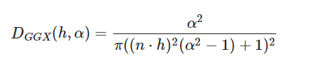

很久前总结了pbr公式内容：PBR渲染原理，但没有说到各向异性的问题。
最近发现Filament详细介绍了pbr相关的知识，也有源码可读，可以好好学习一番。
pbr理论中，高光项的公式如下：
\[ f_ r(v,l) = \frac { D(h,\alpha ) G(v,l,\alpha ) F(v,h,F_0) } { 4 (n \cdot v)(n \cdot l) } \]
Filament用一个specularLobe统一描述了各向同性和各向异性的高光项：
vec3 specularLobe(const PixelParams pixel, const Light light, const vec3 h,
float NoV, float NoL, float NoH, float LoH) {
#if defined(MATERIAL_HAS_ANISOTROPY)
return anisotropicLobe(pixel, light, h, NoV, NoL, NoH, LoH);
#else
return isotropicLobe(pixel, light, h, NoV, NoL, NoH, LoH);
#endif
}
本文的目标是理解这里面的代码。
Filament的着色流程
代码都在shaders/src目录，根据宏变体，会组合这里面的代码，最终生成目标shader。
main.fs的main是入口:
void main() {
filament_lodBias = frameUniforms.lodBias;
// See shading_parameters.fs
// Computes global variables we need to evaluate material and lighting
computeShadingParams(); // 计算一些全局参数
// Initialize the inputs to sensible default values, see material_inputs.fs
MaterialInputs inputs;
initMaterial(inputs); // 初始化默认值
// Invoke user code
material(inputs); //调用.mat文件里的用户代码
fragColor = evaluateMaterial(inputs); // 着色
...
}
其中的evaluateMaterial具体是哪一个实现，得看选择的shading model。以基本的pbr为例（即LIT模型），代码在shading_lit.fs：
vec4 evaluateLights(const MaterialInputs material) {
PixelParams pixel;
getPixelParams(material, pixel); // 从材质参数转换得到后续计算用的PixelParams
vec3 color = vec3(0.0);
evaluateIBL(material, pixel, color); // 默认都有IBL间接光
#if defined(HAS_DIRECTIONAL_LIGHTING)
evaluateDirectionalLight(material, pixel, color); // 下面会分析的重点接口
#endif
...
return vec4(color, computeDiffuseAlpha(material.baseColor.a));
}
vec4 evaluateMaterial(const MaterialInputs material) {
vec4 color = evaluateLights(material);
addEmissive(material, color); // 自发光，先忽略
return color;
}
然后就看evaluateDirectionalLight，代码在light_directional.fs：
void evaluateDirectionalLight(const MaterialInputs material,
const PixelParams pixel, inout vec3 color) {
Light light = getDirectionalLight();
...
float visibility = 1.0;
#if defined(HAS_SHADOWING)
//算阴影 得到visibility
...
#endif
#if defined(MATERIAL_HAS_CUSTOM_SURFACE_SHADING)
color.rgb += customSurfaceShading(material, pixel, light, visibility);
#else
color.rgb += surfaceShading(pixel, light, visibility); // 重点
#endif
}
surfaceShading的代码在shading_model_standard.fs，这个就已经是pbr的核心代码了。
几个材质关键参数的计算
MaterialInputs是用户端的参数，即给美术编辑用的：
struct MaterialInputs {
vec4 baseColor;
float roughness;
float metallic;
float reflectance;
float ior;
...
}
PixelParams存了每个着色点的基本系数，一般这些系数和具体的着色算法无关：
struct PixelParams {
vec3 diffuseColor;
float perceptualRoughness;
float perceptualRoughnessUnclamped;
vec3 f0;
float roughness;
vec3 dfg;
vec3 energyCompensation;
...
}
根据MaterialInputs计算PixelParams的代码，主要是算了pixel.diffuseColor和pixel.f0 ：
vec3 computeDiffuseColor(const vec4 baseColor, float metallic) {
return baseColor.rgb * (1.0 - metallic);
}
void getCommonPixelParams(const MaterialInputs material, inout PixelParams pixel) {
vec4 baseColor = material.baseColor;
pixel.diffuseColor = computeDiffuseColor(baseColor, material.metallic);
#if !defined(SHADING_MODEL_SUBSURFACE) && (!defined(MATERIAL_HAS_REFLECTANCE) && defined(MATERIAL_HAS_IOR))
float reflectance = iorToF0(max(1.0, material.ior), 1.0);
#else
// Assumes an interface from air to an IOR of 1.5 for dielectrics
float reflectance = computeDielectricF0(material.reflectance);
#endif
pixel.f0 = computeF0(baseColor, material.metallic, reflectance);
...
}
pixel.diffuseColor
从computeDiffuseColor可见，metallic越大，pixel.diffuseColor就越接近黑色，黑色即表示几乎没有漫反射光。
pixel.f0
首先是理解什么是F0, F0等于 Fresnel Reflectance at 0 Degrees，是一个介于0到1的数，它表示当入射光线和表面垂直时，有x%的radiance变成镜面反射出去（剩下的1-x%发生折射）。
为什么要知道F0呢，因为pbr计算过程中有一个费涅尔项F（Fresnel term），需要用到F0。
有几个重要知识点要记一下：
- 电介质(dielectrics)的F0是非彩色的(achromatic)，即认为RGB各分量相等
- 金属(metallic)的F0是彩色的(chromatic)，RGB分量不相等
- F90必然等于1.0，F90表示当光线以grazing angles打到表面时，100%发生镜面反射，无论是电介质还是金属都一样
- 一般来说，大部分电介质的F0是4%；水是2%；F0最高的电介质是宝石(gemstones)，16%左右。

F0计算方法1
为了方便美术调节F0，于是业界大佬发明了映射公式：
\[ f_0 = 0.16 \cdot f_{linear} ^2 \]
\(f_{linear}\)是个0到1的线性值，其中0.5对应水的F0（2%），1.0对应宝石的F0(16%)。Filament shader里的material.reflectance即是\(f_{linear}\)，computeDielectricF0就是做这个映射的接口：
float computeDielectricF0(float reflectance) {
return 0.16 * reflectance * reflectance;
}
F0计算方法2
另一种算法是基于材质的ior。ior是指光穿过两种介质界面时的折射率，例如空气\(\rightarrow \)水界面的ior是1.33。
ior也是一个给美术调节的系数，即Filament shader里的material.ior。
ior涉及到两种介质，但在游戏里一般其中一种介质是空气，因此可以认为，各种介质相对空气的ior，即为该介质的ior，记为\(n_{ior}\)。空气的(n_{ior}\)即为1。
由ior算F0的公式如下：
\[ f_0 ( n_{ior} ) = ( \frac {n_{ior} - 1}{n_{ior} + 1} ) ^2 \]
这条公式不是随便拟合出的，是真实的物理公式简化得到的。详情可阅读：
涉及到极化性质什么的，就不细究了。
总之能简化成上述公式的原因是，\(f_{0}\)描述的是垂直角度的反射率。
另外补充一下，当其中一种介质并不是空气时，此时也可以根据这两种介质相对空气的ior，来算\(f_{0}\)，公式如下：
\[ f_0 = ( \frac { n_{1} - n_{2} }{ n_{1} + n_{2} } ) ^2 \]
分子分母同时除以\(n_{2}\)，就和前一条公式差不多了：
\[ f_0 = ( \frac { \frac {n_{1} } { n_{2} } - 1 }{ \frac {n_{1} } { n_{2} } + 1 } ) ^2 \]
当\(n_{2}\)为空气的ior 1.0时，就是第一条公式了。
Filament中的实现代码如下：
float iorToF0(float transmittedIor, float incidentIor) {
return sq((transmittedIor - incidentIor) / (transmittedIor + incidentIor));
}
transmittedIor即\(n_{1}\)，incidentIor即\(n_{2}\)。
调用代码：
float reflectance = iorToF0(max(1.0, material.ior), 1.0);
可见，Filament直接约束了transmittedIor不低于1，且让incidentIor固定为空气ior 1.0。
根据material.metallic插值
上面算出来的\(f_{0}\)是个标量（scalar）（非彩色），只限定于电介质，为了和金属材质统一起来，所以还需要根据材质的metallic（金属度），做插值：
vec3 computeF0(const vec4 baseColor, float metallic, float reflectance) {
return baseColor.rgb * metallic + (reflectance * (1.0 - metallic));
}
pixel.f0 = computeF0(baseColor, material.metallic, reflectance);
可见，金属度越高，pixel.f0越接近于材质属性里的baseColor（彩色）；金属度越低，越接近前面算出来的电介质reflectance（非彩色）。
isotropic specular
先从各向同性开始：
vec3 isotropicLobe(const PixelParams pixel, const Light light, const vec3 h,
float NoV, float NoL, float NoH, float LoH) {
float D = distribution(pixel.roughness, NoH, h);
float V = visibility(pixel.roughness, NoV, NoL);
vec3 F = fresnel(pixel.f0, LoH);
return (D * V) * F;
}
发现代码里少了\( 4 (n \cdot v)(n \cdot l) \)部分，这是因为Filament把specular公式拆成三部分：
\[ f_ r(v,l) = D(h,\alpha ) \cdot \frac { G(v,l,\alpha ) } { 4 (n \cdot v)(n \cdot l) } \cdot F(v,h,F_0) = D \cdot V \cdot F \]
\( 4 (n \cdot v)(n \cdot l) \)被放进了V项中了。
D项
Filament里只有GGX一种（说明够用）:

做一些变换，方便和代码对应：
\[ D = \frac {1}{\pi } \cdot (\frac {\alpha } { (n\cdot h)^ 2(\alpha ^ 2 - 1) + 1 })^ 2 \]
\[ = \frac {1}{\pi } (\frac {\alpha } { (n\cdot h)^ 2 \alpha ^ 2 - (n\cdot h)^ 2 + 1 })^ 2 \]
\[ = \frac {1}{\pi } (\frac {\alpha } { ( (n\cdot h) \alpha) ^ 2 + (1 - (n\cdot h)^ 2) })^ 2 \]
代码如下：
float D_GGX(float roughness, float NoH, const vec3 h) {
float oneMinusNoHSquared = 1.0 - NoH * NoH;
float a = NoH * roughness;
float k = roughness / (oneMinusNoHSquared + a * a);
float d = k * k * (1.0 / PI);
return saturateMediump(d);
}
float distribution(float roughness, float NoH, const vec3 h) {
#if BRDF_SPECULAR_D == SPECULAR_D_GGX
return D_GGX(roughness, NoH, h);
#endif
}
G项
G项的话，Filament用了这篇论文里的equation 99： Understanding the Masking-Shadowing Function in Microfacet-Based BRDFs。这条公式的好处推导相当复杂，直接用即可。

里面的符号的解释：
\(\omega _o\), \(\omega _i\), \(\omega _m\)分别表示出射方向、入射方向、微平面法线方向。
\(\chi ^+ \) 是指heaviside function，也叫unit step function，单位阶跃函数，值要么是0要么是1。

因为specular只考虑反射光，所以出入射方向和微平面法线夹角小于180°，分子等于1。
另外因为\( 4 (n \cdot v)(n \cdot l) \)被合并到了G项里（所以就换了个名字叫V项）。
最终的V公式如下：

float V_SmithGGXCorrelated(float roughness, float NoV, float NoL) {
float a2 = roughness * roughness;
float lambdaV = NoL * sqrt((NoV - a2 * NoV) * NoV + a2);
float lambdaL = NoV * sqrt((NoL - a2 * NoL) * NoL + a2);
float v = 0.5 / (lambdaV + lambdaL);
return saturateMediump(v);
}
这里又有个经典技巧，牺牲精度换时间。因为开平方和平方操作都比较耗，直接干掉，公式变成：

这个只是近似公式，数学上是错的，但不用深究，用就是了。
float V_SmithGGXCorrelated_Fast(float roughness, float NoV, float NoL) {
/*
float a = roughness;
float GGXV = NoL * (NoV * (1.0 - a) + a);
float GGXL = NoV * (NoL * (1.0 - a) + a);
return 0.5 / (GGXV + GGXL);
*/
float v = 0.5 / mix(2.0 * NoL * NoV, NoL + NoV, roughness);
return saturateMediump(v);
}
float visibility(float roughness, float NoV, float NoL) {
#if BRDF_SPECULAR_V == SPECULAR_V_SMITH_GGX
return V_SmithGGXCorrelated(roughness, NoV, NoL);
#elif BRDF_SPECULAR_V == SPECULAR_V_SMITH_GGX_FAST
return V_SmithGGXCorrelated_Fast(roughness, NoV, NoL);
#endif
}
F项

\(f_{0}\)、\(f_{90}\)上面已经分析过了，不再介绍。
当\(f_{90}\)为1时，有以下等价公式：
\[ f_{90} = 1\]
\[ f = (1 - v\cdot h)^ 5 \]
\[ F = f_{90}(1 - v\cdot h)^ 5 - f_{0}( 1 - (1 - v\cdot h)^ 5 ) \]
\[ = (1 - v\cdot h)^ 5 - f_{0}( 1 - (1 - v\cdot h)^ 5 ) \]
\[ = f - f_{0}( 1 - f ) \]
vec3 F_Schlick(const vec3 f0, float VoH) {
float f = pow(1.0 - VoH, 5.0);
return f + f0 * (1.0 - f);
}
float F_Schlick(float f0, float f90, float VoH) {
return f0 + (f90 - f0) * pow5(1.0 - VoH);
}
vec3 fresnel(const vec3 f0, float LoH) {
#if FILAMENT_QUALITY == FILAMENT_QUALITY_LOW
return F_Schlick(f0, LoH); // f90 = 1.0
#else
float f90 = saturate(dot(f0, vec3(50.0 * 0.33)));
return F_Schlick(f0, f90, LoH);
#endif
}
代码里实现了一种更准确的F项，具体细节看这里: Specular occlusion
anisotropic specular
博主将十分感谢对本文章的任意金额的打赏^_^